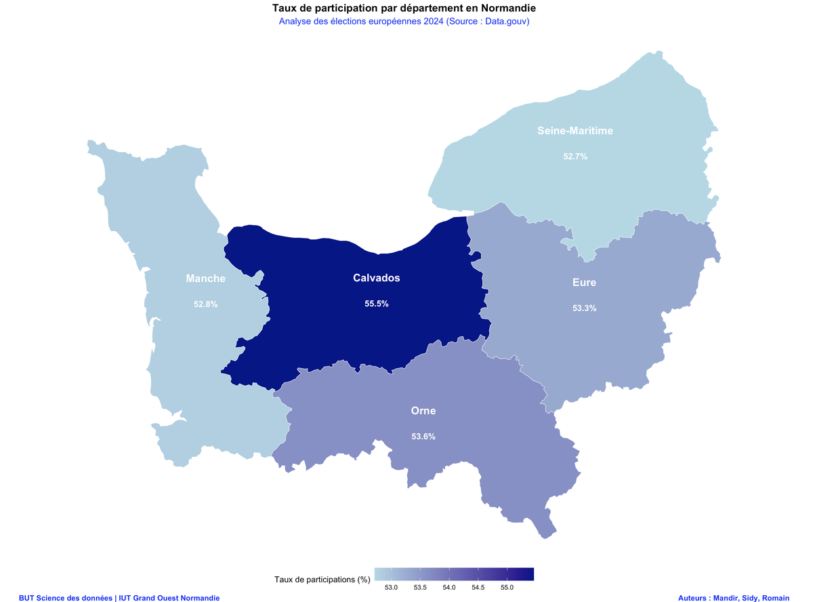

Statistiques, 2024-2025, groupe de trois
Élections européennes 2024, bureau de vote par bureau de vote
On est partis du fichier des résultats par bureau de vote publié sur data.gouv.fr, avec ses 38 listes. Chaque bureau a été rattaché à son département et à sa région, puis un classeur Excel se génère tout seul avec un onglet par département. Le rapport finit par un zoom sur les cinq départements normands, cartes à l'appui.
Outils : R, dplyr, ggplot2, sf, openxlsx